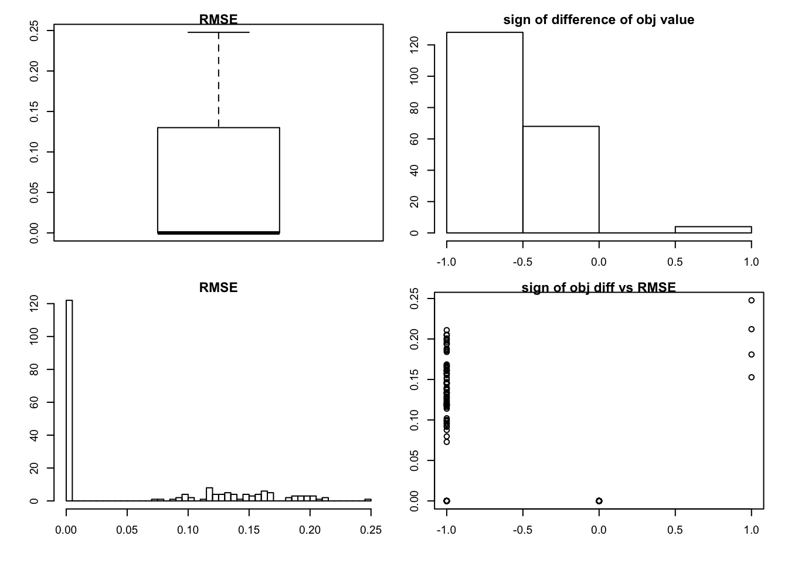
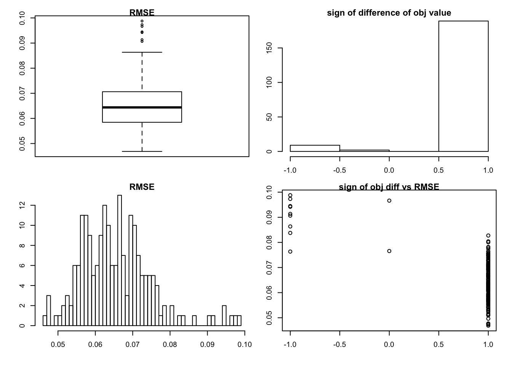
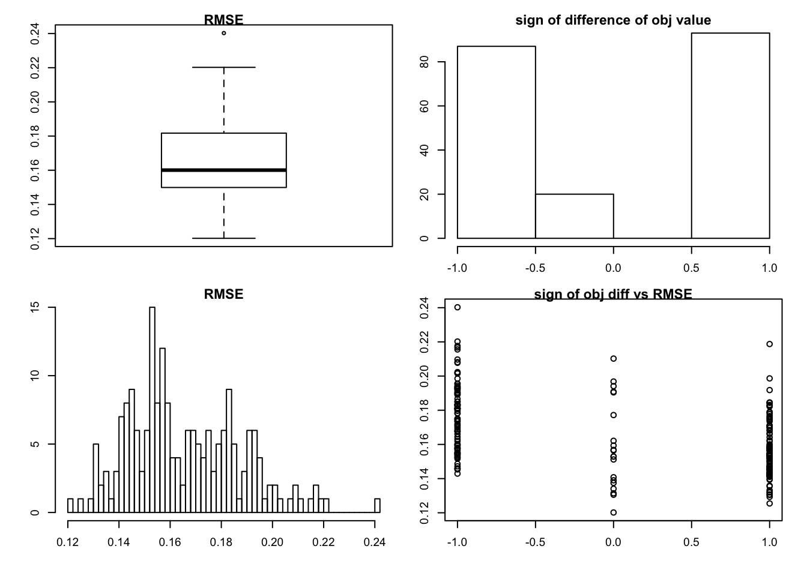
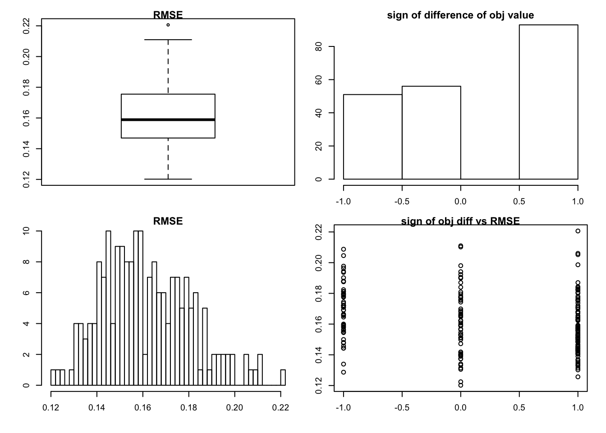

objective function checking
Wei Wang
YYYY-MM-DD
Last updated: 2017-06-19
Code version: 5731020
rank 1 vs rank 0
we focus on the “shrink” method now
As Matthew suggested, we focus on the rank 0 vs rank 1 case.
library(flashr)
sim_K = function(K, N, P, SF, SL, signal,noise){
E = matrix(rnorm(N*P,0,noise),nrow=N)
Y = E
L_true = array(0, dim = c(N,K))
F_true = array(0, dim = c(P,K))
for(k in 1:K){
lstart = rnorm(N, 0, signal)
fstart = rnorm(P, 0, signal)
index = sample(seq(1:N),(N*SL))
lstart[index] = 0
index = sample(seq(1:P),(P*SF))
fstart[index] = 0
L_true[,k] = lstart
F_true[,k] = fstart
Y = Y + lstart %*% t(fstart)
}
return(list(Y = Y, L_true = L_true, F_true = F_true, Error = E))
}simulation: rank 0
In this section, we will use the flash since it is a rank one model.
There are code from flashr package to get the objective funtion, and we will use them to calculate the objective function for rank one case.
rank0check = function(K=1,N = 100, P=200, SF = 0.5, SL = 0.5, signal = 0,noise = 1, mtype = "shrink"){
data = sim_K(K,N, P, SF , SL , signal ,noise )
Y = data$Y
E = data$Error
if(mtype == "fdr"){
g1 = flash(Y,objtype = "l")
}else{
g1 = flash(Y,objtype = "l",ash_para = list(method = "shrink"))
}
RMSE = sqrt(mean((Y - g1$l %*% t(g1$f) -E)^2))
obj_val = g1$obj_val
# to get the rank zero objective value
sigmae2_v0 = Y^2
fit_g0 = list(pi=c(1,0,0),sd = c(0,0.1,1))
mat0 = list(comp_postmean = matrix(0,ncol= N,nrow = 3),
comp_postmean2 = matrix(0,ncol= N,nrow = 3),
comp_postprob = matrix(0,ncol= N,nrow = 3))
mat0$comp_postprob[1,] = 1
par_l0 = list(g = fit_g0, mat = mat0)
fit_g0 = list(pi=c(1,0,0),sd = c(0,0.1,1))
mat0 = list(comp_postmean = matrix(0,ncol= P,nrow = 3),
comp_postmean2 = matrix(0,ncol= P,nrow = 3),
comp_postprob = matrix(0,ncol= P,nrow = 3))
mat0$comp_postprob[1,] = 1
par_f0 = list(g = fit_g0, mat = mat0)
obj0 = obj(N,P,sigmae2_v0,sigmae2 = mean(sigmae2_v0),par_f0,par_l0,objtype = "lowerbound_lik")
return(list(rmse = RMSE,obj_val = obj_val,obj_0 = obj0))
}
sim_rank0 = function(K=1,N = 100, P=200, SF = 0.5, SL = 0.5, signal = 0,noise = 1,mtype = "shrink"){
T = 200
RMSE = rep(NA,T)
sign_obj = rep(NA,T)
for(t in 1:T){
g0 = rank0check(K = 1,N, P, SF, SL , signal,noise,mtype = mtype)
RMSE[t] = g0$rmse
sign_obj[t] = sign(g0$obj_val - g0$obj_0)
}
par(mfrow = c(2, 2))
par(cex = 0.6)
par(mar = c(3, 3, 0.8, 0.8), oma = c(1, 1, 1, 1))
boxplot(RMSE,main = "RMSE")
hist(sign_obj, breaks = 3,main = "sign of difference of obj value")
hist(RMSE,breaks = 50,main = "RMSE")
plot(sign_obj,RMSE, main = "sign of obj diff vs RMSE")
}we set the 200 simulations for each case.
case 1:
set.seed(99)
sim_rank0(K=1,N = 100, P=200, SF = 0.5, SL = 0.5, signal = 0,noise = 1)- top-left: boxplot of RMSE
- top-right: histogram of \(\text{sign} \left\{obj(model| method = ``shrink") - obj(model|rank= 0) \right\}\)
- bottom-left: histogram of RMSE
- bottom-right: scatter plot of sign-difference-objective-value vs RMSE.
we can see that in almost half of the cases, we get rank zero estimation, but there are another half getting smaller objective function and larger RMSE value. There are two extreme cases out of 200, we get larger objective value but larger RMSE as well.
In this case, we know that rank zero is the truth, so the \(RMSE = 0\) is the best prediction.
This is just a simple example, and we can try more situations:
set.seed(99)
sim_rank0(K=1,N = 20, P=200, SF = 0.5, SL = 0.5, signal = 0,noise = 1)
set.seed(99)
sim_rank0(K=1,N = 20, P=30, SF = 0.5, SL = 0.5, signal = 0,noise = 1)
if the method = “fdr”
the setting is similar as case 1
set.seed(99)
sim_rank0(K=1,N = 100, P=200, SF = 0.5, SL = 0.5, signal = 0,noise = 1,mtype = "fdr")we can see that we would get rank zero estimation in most cases.
rank 1
we simulate rank 1 and compare it with the rank zero solution (the setting is similar with case 1):
set.seed(99)
sim_rank0(K=1,N = 100, P=200, SF = 0.5, SL = 0.5, signal = 1,noise = 1)use the “fdr” method
set.seed(99)
sim_rank0(K=1,N = 100, P=200, SF = 0.5, SL = 0.5, signal = 1,noise = 1, mtype = "fdr")very sparse
the default is “shrink” method
set.seed(99)
sim_rank0(K=1,N = 100, P=200, SF = 0.9, SL = 0.8, signal = 1,noise = 1 )
very sparse with big noise
set.seed(99)
sim_rank0(K=1,N = 100, P=200, SF = 0.8, SL = 0.8, signal = 1,noise = 2)
set.seed(99)
sim_rank0(K=1,N = 100, P=200, SF = 0.8, SL = 0.8, signal = 1,noise = 2,mtype = "fdr")
Session information
sessionInfo()R version 3.3.0 (2016-05-03)
Platform: x86_64-apple-darwin13.4.0 (64-bit)
Running under: OS X 10.12.4 (unknown)
locale:
[1] en_US.UTF-8/en_US.UTF-8/en_US.UTF-8/C/en_US.UTF-8/en_US.UTF-8
attached base packages:
[1] stats graphics grDevices utils datasets methods base
other attached packages:
[1] flashr_0.1.1 workflowr_0.4.0 rmarkdown_1.3
loaded via a namespace (and not attached):
[1] Rcpp_0.12.11 rstudioapi_0.6 knitr_1.15.1
[4] magrittr_1.5 REBayes_0.73 MASS_7.3-45
[7] munsell_0.4.3 doParallel_1.0.10 pscl_1.4.9
[10] colorspace_1.3-2 SQUAREM_2016.8-2 lattice_0.20-34
[13] foreach_1.4.3 plyr_1.8.4 ashr_2.1-21
[16] stringr_1.2.0 tools_3.3.0 parallel_3.3.0
[19] grid_3.3.0 gtable_0.2.0 irlba_2.1.2
[22] git2r_0.18.0 htmltools_0.3.5 iterators_1.0.8
[25] assertthat_0.2.0 lazyeval_0.2.0 yaml_2.1.14
[28] rprojroot_1.2 digest_0.6.12 tibble_1.2
[31] Matrix_1.2-8 ggplot2_2.2.1 codetools_0.2-15
[34] evaluate_0.10 stringi_1.1.2 Rmosek_7.1.2
[37] scales_0.4.1 backports_1.0.5 truncnorm_1.0-7 This R Markdown site was created with workflowr